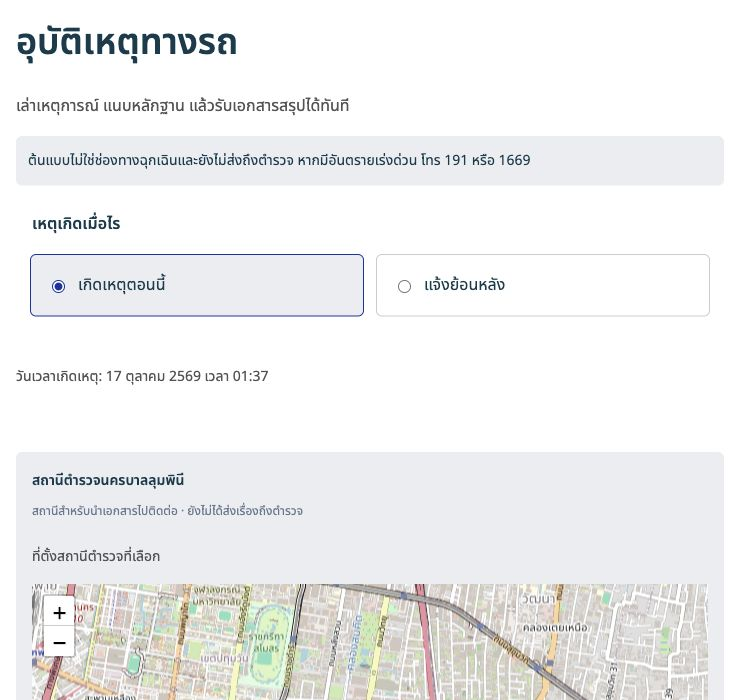
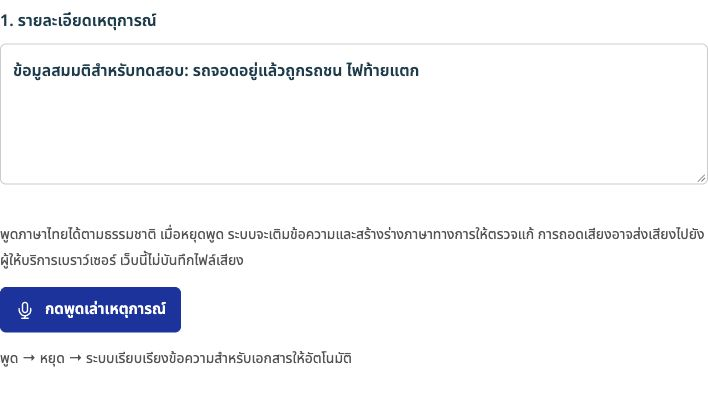
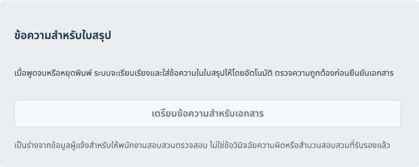
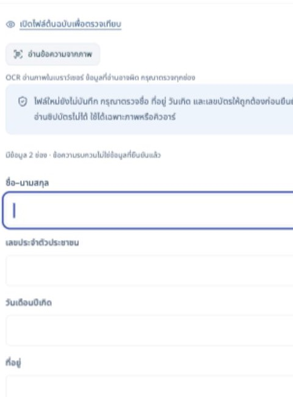
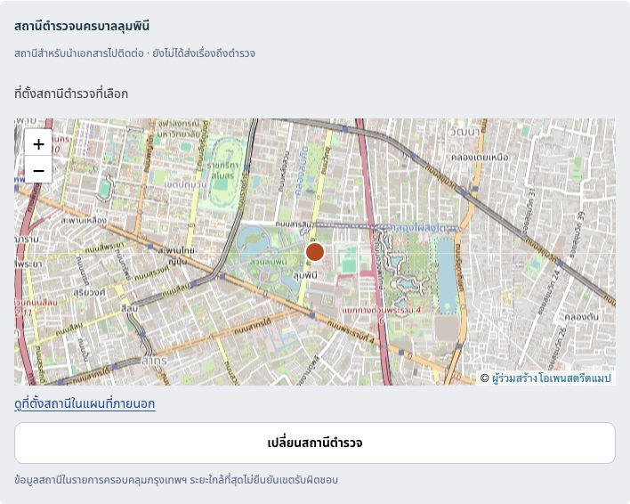

เตรียมข้อมูลให้พร้อม
ก่อนไปแจ้งความ
เล่าเหตุการณ์ด้วยคำของคุณ ให้พร้อมยื่นช่วยจัดร่างเอกสาร รวบรวมหลักฐาน และเลือกสถานีที่จะไปติดต่อ
เริ่มเตรียมข้อมูลเริ่มด้วยข้อมูลติดต่อ ลายมือชื่อเพิ่มภายหลังได้
คุณตรวจยืนยันทุกข้อความ ไม่มีการส่งเรื่องถึงตำรวจ
เอกสารเก็บในเบราว์เซอร์ในโหมดสาธิตที่ยังไม่เชื่อมระบบกลาง
ร่างด้วยโมเดลในเครื่องไม่ต้องใช้คีย์บริการ ไม่เสียค่าเอพีไอ
ใช้ข้อมูลสถานีจริงจากชุดข้อมูลเปิดกรุงเทพมหานคร

รู้ขอบเขต ก่อนเริ่มเตรียม
88สถานีในกรุงเทพฯเลือกจุดติดต่อจากชุดข้อมูลจริง
3เอกสารจำเป็นสำหรับอุบัติเหตุบัตรประชาชน ใบขับขี่ ทะเบียนรถ
5ไฟล์หลักฐานต่อเรื่องภาพหรือวิดีโอ ไม่เกิน 16 เมกะไบต์ต่อไฟล์
จากคำบอกเล่า
สู่ข้อมูลที่พร้อมตรวจ
เริ่มจากสิ่งที่จำได้ แล้วค่อยตรวจเติมข้อมูลที่ยังขาด คุณเป็นคนตัดสินใจว่าจะใช้ข้อความใด

พูด หรือพิมพ์เท่าที่จำได้
กดพูดเพื่อถอดเสียงภาษาไทย หยุดพูดแล้วระบบจะเตรียมร่างให้ตรวจ หากเครื่องไม่รองรับ คุณยังพิมพ์รายละเอียดเองได้

ตรวจสำนวน เทียบกับเรื่องจริง
โมเดลช่วยเรียบเรียงถ้อยคำในเครื่อง คุณแก้ไขและยืนยันก่อนใช้ ระบบไม่รับรองความถูกต้องหรือเติมข้อเท็จจริงแทนคุณ

อ่านจากภาพ แล้วตรวจทุกช่อง
นำเข้าภาพบัตรเพื่ออ่านข้อความ ลดการกรอกซ้ำ ชื่อ เลขบัตร และที่อยู่ต้องตรวจเทียบกับต้นฉบับก่อนบันทึกเสมอ

เลือกจุดติดต่อที่คุณต้องการ
ดูสถานีจากชุดข้อมูลกรุงเทพฯ 88 แห่ง พร้อมแผนที่สถานี เปลี่ยนหรือระบุชื่อเองได้ ระยะใกล้ที่สุดไม่ใช่การยืนยันเขตรับผิดชอบ
ค่อย ๆ เตรียม
ทีละขั้น
ใช้ข้อมูลสมมติในการทดลอง
ไม่จำเป็นต้องเล่าทุกอย่างได้ครบตั้งแต่แรก
เตรียมข้อมูลติดต่อและเอกสาร
เข้าสู่พื้นที่ในเครื่อง เพิ่มบัตรประชาชน และตรวจข้อมูลที่อ่านได้ สำหรับอุบัติเหตุให้เพิ่มใบขับขี่และทะเบียนรถด้วย
เล่าเหตุการณ์ตามที่ทราบ
เลือกเรื่อง ระบุวันเวลาและสถานที่ พูดหรือพิมพ์สิ่งที่เกิดขึ้น แล้วตรวจร่างสำนวนเทียบกับคำบอกเล่าของคุณ
เลือกสถานีและแนบหลักฐาน
เลือกสถานีที่จะไปติดต่อ แนบภาพหรือวิดีโอที่เกี่ยวข้อง และตรวจว่าเลือกเอกสารที่ต้องการใช้ครบแล้ว
ตรวจยืนยันและเก็บใบสรุป
ส่งแบบจำลองเพื่อบันทึกเรื่อง เปิดใบสรุปเพื่อพิมพ์หรือบันทึกเป็นพีดีเอฟ แล้วนำข้อมูลไปติดต่อเจ้าหน้าที่ด้วยตนเอง
ก่อนใช้งาน โปรดเข้าใจ
- ยังไม่ใช่การแจ้งความ
- เดโมนี้ไม่ส่งเรื่องถึงตำรวจ ไม่ออกเลขรับแจ้งจริง และไม่ใช่แบบฟอร์มที่หน่วยงานใดรับรอง กรณีฉุกเฉินให้ใช้ช่องทางทางการ
- ร่างอาจคลาดเคลื่อน
- คุณต้องตรวจทุกข้อความ โมเดลต้องดาวน์โหลดครั้งแรกขนาดหลายกิกะไบต์และใช้เครื่องที่รองรับ หากใช้งานไม่ได้ ระบบจะเก็บคำบอกเล่าเดิมไว้
- สถานีใกล้ ไม่ได้แปลว่ารับผิดชอบ
- ข้อมูล 88 สถานีมาจากชุดข้อมูลเปิดกรุงเทพมหานคร ดาวน์โหลดเมื่อ 2 ตุลาคม 2569 ระยะเป็นเส้นตรง ควรตรวจสอบเขตรับผิดชอบและข้อมูลล่าสุดกับสถานี
- บางฟังก์ชันเชื่อมต่อภายนอก
- การถอดเสียงอาจใช้บริการของเบราว์เซอร์ แผนที่โหลดจากผู้ให้บริการภายนอก โหมดสาธิตเก็บเอกสารในเครื่อง หากเปิดระบบเจ้าหน้าที่ การส่งข้อมูลจะต้องผ่านการยืนยันของคุณ